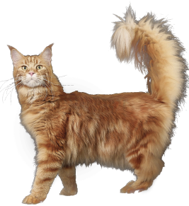

Особенности породы
Мейн-Кун - это порода, которая вызывает к себе уважение. Приобретая в свой дом этого питомца, вы получите умное животное, которому нет равных

- Легко уживается в семьях с детьми или другими животными
- Выполняет команды как дрессированная собака
- Вес может достигать 12 кг, а длина 1 м
- Внешний вид этой кошки похож на дикую рысь
Почему именно мы?
Приобретая животное в нашем питомнике, вы получите